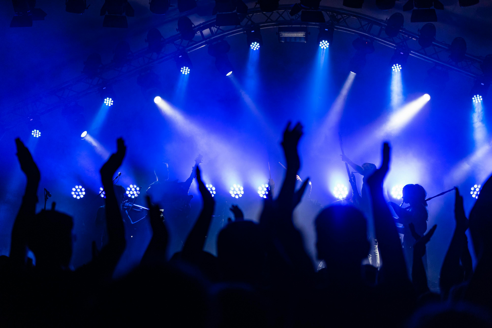

Interesses & hobby’s
Muziek luisteren
Muziek helpt me ontspannen, motiveert me en geeft me inspiratie tijdens het ontwerpen. Ik ontdek graag nieuwe artiesten en luister de hele dag door.

Ontwerpen & creativiteit
Dingen ontwerpen, nieuwe ideeën uitwerken en creatief bezig zijn is echt mijn ding. Van branding tot digitale visuals — ik leef me er volledig in uit.

Uitgaan & feesten
Ik hou van gezelligheid, plezier maken en nieuwe mensen ontmoeten. Uitgaan en feesten geven me energie en maken mijn hoofd helemaal leeg.